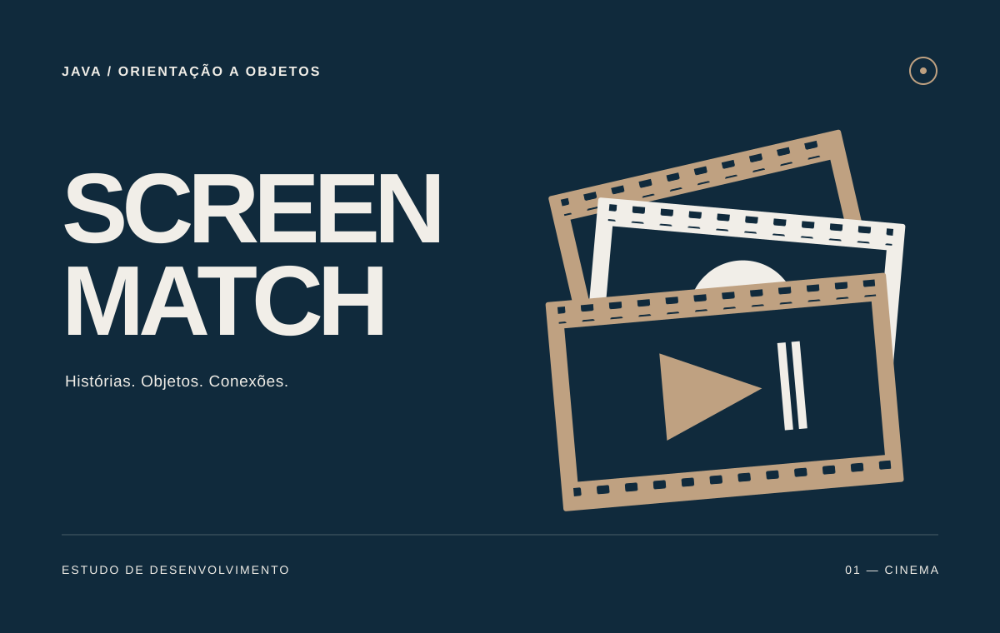

01
Screen Match
Filmes e séries como ponto de partida para modelar objetos, organizar avaliações e calcular o tempo de uma maratona.
Ver códigoPor dentro do projeto
O que construí
Uma aplicação Java com modelos de filmes e séries, avaliações, recomendações e cálculo de tempo total de exibição. O projeto também trabalha com listas e ordenação de títulos.
O que pratiquei
Encapsulamento, herança, polimorfismo e interfaces, além de ArrayList, Comparable, Comparator e validação de dados.